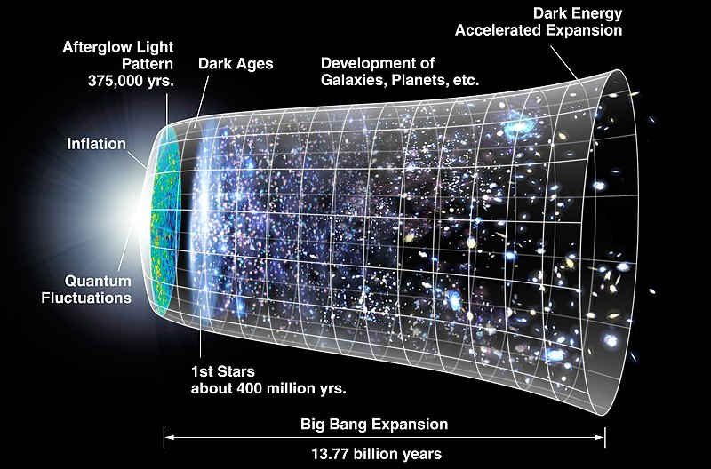

The prevailing model for the evolution of the universe is the Big Bang theory.[38][39] The Big Bang model states that the earliest state of the universe was an extremely hot and dense one, and that the universe subsequently expanded and cooled. The model is based on general relativity and on simplifying assumptions such as the homogeneity and isotropy of space. A version of the model with a cosmological constant (Lambda) and cold dark matter, known as the Lambda-CDM model, is the simplest model that provides a reasonably good account of various observations about the universe. The Big Bang model accounts for observations such as the correlation of distance and redshift of galaxies, the ratio of the number of hydrogen to helium atoms, and the microwave radiation background.
The initial hot, dense state is called the Planck epoch, a brief period extending from time zero to one Planck time unit of approximately 10−43 seconds. During the Planck epoch, all types of matter and all types of energy were concentrated into a dense state, and gravity—currently the weakest by far of the four known forces—is believed to have been as strong as the other fundamental forces, and all the forces may have been unified. The physics controlling this very early period (including quantum gravity in the Planck epoch) is not understood, so we cannot say what, if anything, happened before time zero. Since the Planck epoch, the universe has been expanding to its present scale, with a very short but intense period of cosmic inflation speculated to have occurred within the first 10−32 seconds.[40] This initial period of inflation would explain why space appears to be very flat, and is uniform on scales much larger than light could otherwise travel since the start of the universe.
In the earliest stages of the universe, tiny fluctuations within the universe's density led to concentrations of dark matter gradually forming. Ordinary matter, attracted to these by gravity, formed large gas clouds and eventually, stars and galaxies, where the dark matter was most dense, and voids where it was least dense. After around 100–300 million years,[43]: 333 the first stars formed, known as Population III stars. These were probably very massive, luminous, non metallic and short-lived. They were responsible for the gradual reionization of the universe between about 200–500 million years and 1 billion years, and also for seeding the universe with elements heavier than helium, through stellar nucleosynthesis.[44] The universe also contains a mysterious energy—possibly a scalar field—called dark energy, the density of which does not change over time. After about 9.8 billion years, the universe had expanded sufficiently so that the density of matter was less than the density of dark energy, marking the beginning of the present dark-energy-dominated era.[45] In this era, the expansion of the universe is accelerating due to dark energy.